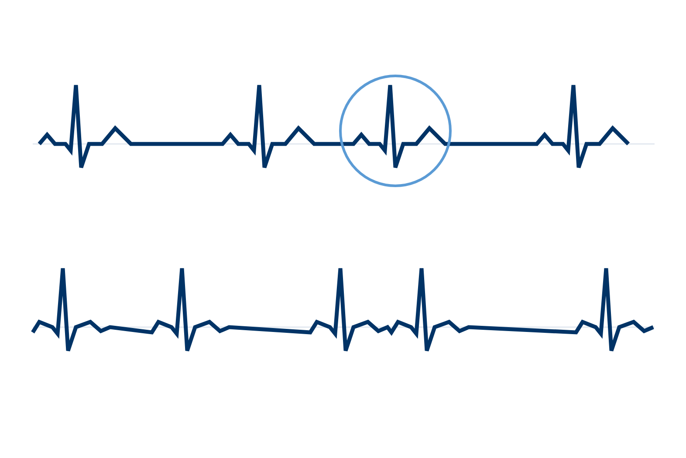
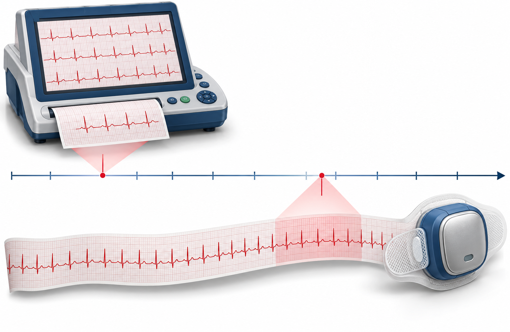
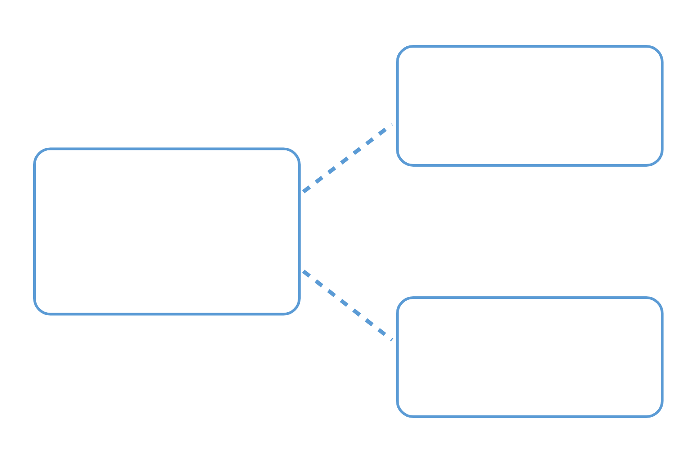
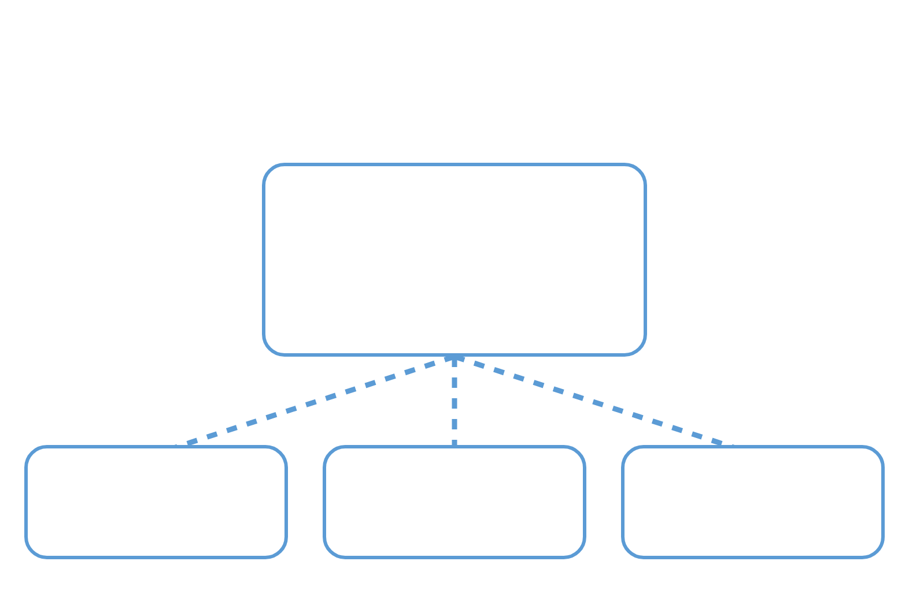

PATIENT EDUCATION · CARDIO
심방조기수축(PAC)
심방세동과 다른가요?
조기수축의 의미와 심전도를 더 기록하는 이유
심전도에서 심방의 신호와 리듬을 구별합니다
 PAC · 심방조기수축
PAC · 심방조기수축 AF · 심방세동
AF · 심방세동
PAC：일찍 나오는 박동AF：일정한 동성 P파 없이 불규칙리듬 차이를 보여주는 모식도얼마나 자주 생기고, 어떤 리듬이 동반되는지 봅니다
심전도 · ECG홀터·패치 기록
시간을 늘려 기록한 시점의 기록PAC 빈도·연속 박동·AF 확인연관성이 있다는 결과가 직접 원인이라는 뜻은 아닙니다
강의에 소개된 관찰연구개인의 운명을 정하는 숫자는 아닙니다
잦은 PAC관찰연구의 표지자새 심방세동허혈성 뇌졸중점선：관찰된 연관성직접 원인을 입증한 화살표가 아닙니다강의는 심방근병증이라는 개념으로 설명합니다
공통 배경을 살핍니다그래서 감시가 중요합니다
심방의 상태 변화심방근병증 개념PAC심방세동뇌졸중공통 배경의 여러 발현숫자가 높다는 이유만으로 치료가 자동 결정되지는 않습니다
| 구분 | 설명 |
|---|---|
| 강의의 관찰연구 정의 | 시간당 >30 PAC 또는 >20개 PAC 연속 박동으로 과도한 심방 조기활동을 정의한 연구 소개 |
| 강의 요약 슬라이드 | ESVEA: 시간당 ≥30 PAC 또는 ≥20회 심방 연속 박동으로 표기 |
| 연자 Q&A · 고빈도 | >500 PAC/24시간을 고빈도로 보아 장기 리듬기록을 고려하는 합의문 제안 소개 |
| 수치의 쓰임 | 서로 다른 자료의 정의입니다. PAC를 몇 % 이상이면 반드시 치료한다는 확립된 기준은 없다고 설명 |
심방세동을 확인했을 때의 치료 판단과 구별합니다
연자 Q&A가 설명한 PAC 관리 방향입니다
증상이 심한가요혈압 관리 비만·수면무호흡
비만·수면무호흡 치료 목적
치료 목적연자 Q&A에서 제시한 두근거림 환자의 의뢰 상황입니다
실신·전실신심한 흉통·숨참심장질환 동반심한데 진단이 안 될 때검사명보다 검사로 알고 싶은 내용을 먼저 확인합니다
조기수축의 의미와 심전도를 더 기록하는 이유